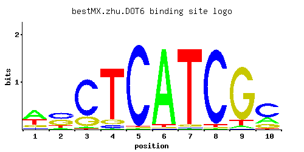

DOT6
YER088C, PBF2
Protein involved in rRNA and ribosome biogenesis; binds polymerase A and C motif; subunit of the RPD3L histone deacetylase complex; similar to Tod6p; has chromatin specific SANT domain; involved in telomeric gene silencing and filamentation
Best-performing DNA-binding model.

View and copy the recommended matrices ↘
A | 0.52 0.08 0.03 0.01 0.01 0.96 0.01 0.01 0.04 0.22 C | 0.06 0.42 0.76 0.05 0.97 0.01 0.01 0.95 0.01 0.58 G | 0.14 0.39 0.20 0.08 0.01 0.01 0.03 0.01 0.88 0.18 T | 0.29 0.11 0.01 0.85 0.01 0.03 0.95 0.03 0.08 0.02
A | 52 8 3 1 1 96 1 1 4 22 C | 6 42 76 5 97 1 1 95 1 57 G | 14 39 20 8 1 1 3 1 88 18 T | 28 11 1 85 1 3 95 3 8 2
A | 0.49 -1.39 -2.37 -3.47 -3.47 1.10 -3.47 -3.47 -2.08 -0.37 C | -1.10 0.85 1.44 -1.28 1.68 -2.89 -2.89 1.66 -2.89 1.17 G | -0.25 0.77 0.11 -0.81 -2.89 -2.89 -1.79 -2.89 1.59 0.00 T | -0.10 -1.07 -3.47 0.98 -3.47 -2.37 1.09 -2.37 -1.39 -2.77
Alternative candidate matrices 3
Historical matrix candidates from the original ScerTF database. Expand a source to inspect its original logo, scores, and matrix values.
DOT6Badis et. al.P = 0.03383View matrix ↘
DOT6Foat et. al.P = 1View matrix ↘
DOT6Zhao and StormoP = 0.0004195View matrix ↘
Gene-level annotations and interactions.
Genes bound in ChIP-chip experiments 4 genes
YDL146W, YER044C-A, YFR007W, YMR056C
Genes affected by TF deletion 64 genes
YDR036C, YJR083C, YHR146W, YMR191W, YPL016W, YJR112W, YOL136C, YAR068W, YNL337W, YBR129C, YNL146W, YDR309C, YDR313C, YER029C, YKL206C, YOR229W, YGR134W, YMR023C, YNR066C, YLR099C, YML007W, YMR171C, YMR145C, YHR214W, YNL309W, YPL156C, YBR135W, YNL152W, YCL025C, YPR199C, YGL062W, YNL065W, YNR077C, YNL289W, YDR019C, YAL018C, YMR175W, YGR049W, YJR130C, YLL050C, YLR015W, YMR151W, YPR066W, YJL167W, YMR298W, YIR016W, YOL155C, YHR018C, YLR297W, YGR146C, YLR428C, YIL169C, YLR265C, YLR269C, YMR034C, YOR212W, YBR244W, YDL117W, YLR049C, YNL264C, YDR122W, YHR074W, YNR018W, YJR011C
Predicted TF–TF partners 3 genes
EDS1, STB3, TOD6